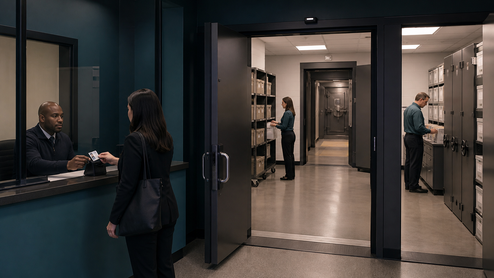

Data security, privacy and integrity
Data security is protection against unauthorised access, loss or damage. Privacy concerns appropriate collection, use and disclosure of personal data. Integrity means data remains accurate, complete and unaltered except by authorised processes.
The concepts overlap but are not synonyms: encrypted inaccurate data may be secure but lack integrity; authorised publication may preserve integrity while violating privacy.
Both data security and computer-system security are necessary. Protecting only a data file is insufficient if an attacker can control the operating system, install malware, steal credentials or make the computer system unavailable; protecting only the device is insufficient if copied data is disclosed, altered or lost.
Protection works in layers

Decision evidence
| Factor, term or condition | Technical reading |
|---|---|
| Security | Data security is protection against unauthorised access, loss or damage. Privacy concerns appropriate collection, use and disclosure of personal data. Integrity means data remains accurate, complete and unaltered except by authorised processes. |
| Privacy | Data security is protection against unauthorised access, loss or damage. Privacy concerns appropriate collection, use and disclosure of personal data. Integrity means data remains accurate, complete and unaltered except by authorised processes. |
| Integrity | Data security is protection against unauthorised access, loss or damage. Privacy concerns appropriate collection, use and disclosure of personal data. Integrity means data remains accurate, complete and unaltered except by authorised processes. |
Worked example · Data security, privacy and integrity: complete worked route
- Identify the relevant condition or input
Both data security and computer-system security are necessary.
- Trace how the process works
Protecting only a data file is insufficient if an attacker can control the operating system, install malware, steal credentials or make the computer system unavailable;
- Connect the mechanism to its result
protecting only the device is insufficient if copied data is disclosed, altered or lost.
- Complete example
Medical records on a compromised computer system: Encryption restricts unauthorised reading of the record data. Access rights restrict who may view or alter it. Anti-virus and a firewall help protect the computer system that stores and processes the records. If malware controls the system, it may steal decrypted data, alter records or stop authorised access even though the stored file was encrypted.
Integrity protects data from unauthorised or accidental alteration
![Goal Data should remain accurate, complete and unaltered unless changed by an authorised process. Risk Exam marks, bank balances or stock levels are changed incorrectly. Validation and verification Validation checks stated rules; verification checks entered or transferred data against its source, not whether the source is true or complete. Other controls Access rights, checksums, hashes and audit trails can prevent, detect or record some changes, but no control guarantees integrity. Exam wording Explain exactly how the named control prevents, detects or records an incorrect change.](../../assets/diagrams/stage10-infographics/stage10-lesson-063-integrity.jpg)
- Goal Data should remain accurate, complete and unaltered unless changed by an authorised process.
- Risk Exam marks, bank balances or stock levels are changed incorrectly.
- Validation and verification Validation checks stated rules; verification checks entered or transferred data against its source, not whether the source is true or complete.
- Other controls Access rights, checksums, hashes and audit trails can prevent, detect or record some changes, but no control guarantees integrity.
- Exam wording Explain exactly how the named control prevents, detects or records an incorrect change.
教师讲法 / 易错点
用“术语 → 机制/步骤 → 场景后果”检查 S6.01。先让学生读素材关系，再用英文完整表达；若只能复述名词，就回到 worked example 逐步追踪。